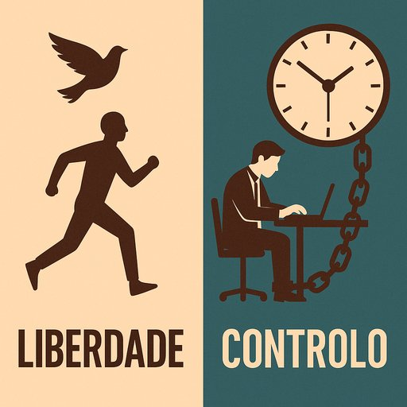

Publicado em 2025-06-11 16:49:40
Durante décadas, o paradigma do trabalho assentou numa ilusão sagrada: a de que controlar é gerir, e que vigiar é liderar. O relógio, o cartão de ponto, o chefe sempre atento ao como, o processo elevado a dogma — tudo isto formou o altar de uma religião empresarial que ainda hoje persiste em muitas mentes atrasadas. Mas essa religião, meus senhores, está podre. E o incenso do controlo já não disfarça o cheiro a mofo do vosso modelo falido.
Quantos diretores, chefes e pseudo-líderes gastaram décadas a medir a forma e não o efeito? A punir a criatividade em nome da obediência? A confundir disciplina com produtividade e medo com respeito?
O problema não é novo, mas agora tornou-se insustentável.
Vivemos numa era em que o trabalho remoto, a automação, a colaboração descentralizada e a inteligência coletiva são a norma emergente — e não há chicote ou reunião inútil que os detenha. O mundo mudou, mas muitos gestores ainda vivem no século XX, agarrados à fantasia do controlo total. São como generais a dar ordens em trincheiras desertas, ignorando que os soldados já foram fundar startups.
A tua obsessão com o como já não interessa.
Queremos saber para quê.
Queremos saber o que entregaste.
Queremos saber quem impactaste.
Agora é, muitas vezes, sinónimo de prisão disfarçada de salário.
"Enquanto os gestores medem passos, o mundo avança em saltos."
"Enquanto se fixam nos formulários e nas regras, o talento voa para onde é ouvido."
O verdadeiro líder não quer clones. Quer equipas diversas, autónomas e vibrantes. Quer resultados, não presenças decorativas. Quer deliverables, não processos fúteis cheios de burocracia.
A guerra está em curso.
De um lado, a Liberdade: talento, responsabilidade, criatividade e propósito.
Do outro, o Controlo: desconfiança, microgestão, reuniões vazias e relógios-pastores.
E tu, gestor, em que lado estás?
Autoria de Francisco Gonçalves, testemunha de muitos anos em que hestores assassinaram impunenente o trabalho e a produtividade nas suas empresas.
"Enquanto os gestores medem passos, o mundo avança em saltos.
O tempo das máquinas humanas terminou. É tempo de confiar na inteligência e na vontade livre de quem trabalha com propósito.
A guerra silenciosa entre Liberdade e Controlo já começou. E tu, gestor, em que lado estás?"